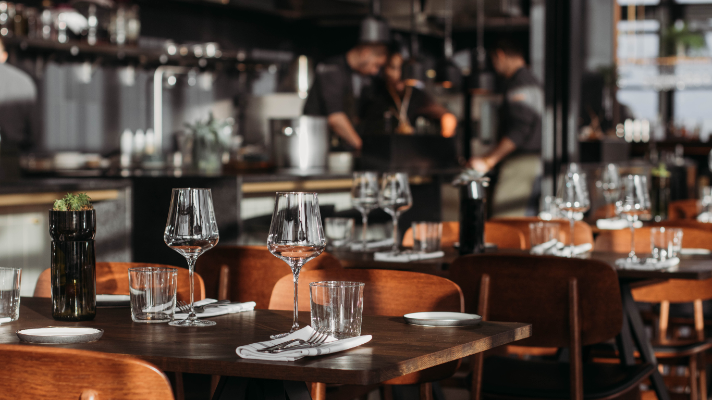
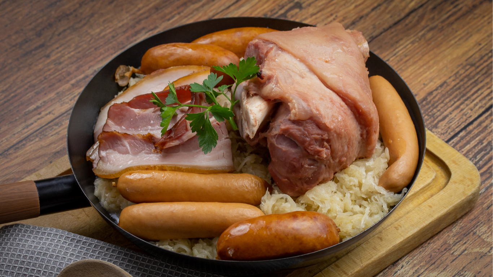
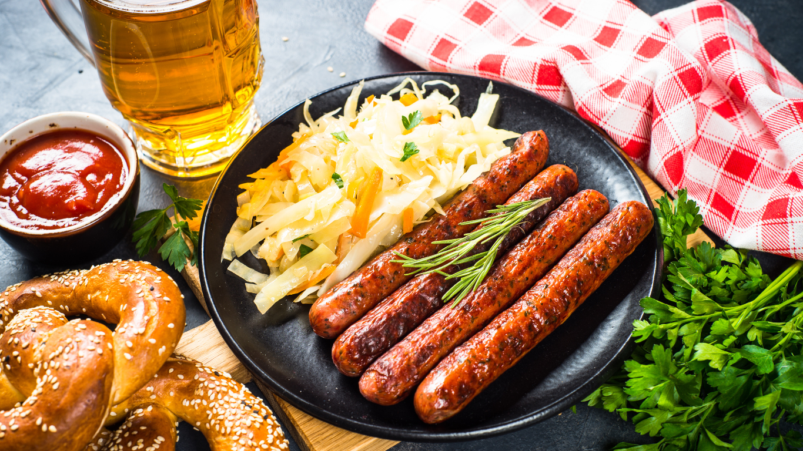
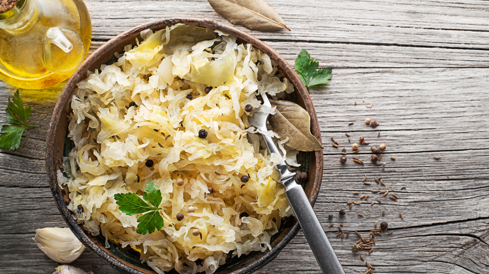

Bienvenue à la Choucroutière
Découvrez la richesse de la gastronomie alsacienne dans un cadre chaleureux et authentique. Chez La Choucroutière, chaque plat raconte l’histoire d’une tradition : de la choucroute garnie au Riesling aux douceurs sucrées de notre terroir. Venez partager un moment convivial où le savoir-faire et les produits locaux sont à l’honneur.

La Choucroutière
58, rue de l’école sauvage
33410
Moncoding
12h-15h / 18h30-0h00
Fermé Mardi (midi/soir) Merc midi
Nos spécialités
-

Choucroute alsacienne
-

Choucroute orientale
-

Choucroute veggie
Le mot du chef
Bienvenue à La Choucroutière, où la gastronomie alsacienne se code avec passion et précision. Comme un développeur assemble chaque ligne de code pour créer une œuvre unique, nous sélectionnons chaque ingrédient pour composer des plats qui ravissent vos sens. Mon équipe et moi-même nous appliquons à écrire, jour après jour, la recette parfaite de la convivialité et du goût. Prenez place, dégustez, et laissez-vous embarquer dans notre univers gourmand, où tradition et créativité s'imbriquent avec art.